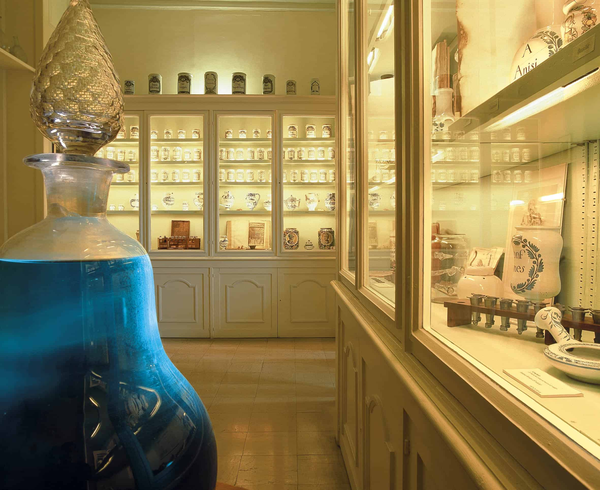

 Situé dans le pavillon de l'Hôtel-Dieu où est né Gustave Flaubert, et où son père occupa un poste de chirurgien, ce musée, ouvert en 1945, a une double vocation médicale et littéraire. Il présente des souvenirs de jeunesse et des portraits de la famille Flaubert, mais évoque également l'histoire de la médecine du Moyen-âge au début du XXe siècle. Le visiteur pourra y trouver la chambre natale de l'auteur de Madame Bovary, ainsi qu'une étonnante et importante collection de céramique, de littérature et de livres anciens. Des pièces médicales uniques comme un lit de malades à six places, un perchoir à sangsues ou encore un mannequin d'accouchement du XVIIIe siècle se trouvent également dans ce musée hospitalier, classé Monument historique depuis 1932.
Horaires
Le mardi de 10 heures à 12 heures et 14 heures à 18 heures
Du mercredi au samedi de 14 heures à 18 heures
Ouverture le matin pour les groupes uniquement sur réservation
Fermé les dimanches, lundis et jours fériés.
Fermeture de la billetterie à 17 heures 30 !
Tarifs
- Tarif plein : 4€
- Tarif réduit : 2€
- Tarif scolaires : 40€
- Tarif groupes : tarif visite commentée 60€ + droit d'entrée à 2€ par personne
- Gratuité pour les 18-25 ans, le personnel du CHU de Rouen et les Amis du musée Flaubert
- Audio guide : 2€
Localisation
51, rue de Lecat
76000 Rouen
Situer sur la carte...
Accès
TEOR 1, 2 et 3, arrêt Pasteur-Panorama
5 minutes à pied de la place du Vieux-Marché
Contacts
- Téléphone : 02 35 15 59 95
- Courriel : musee.flaubert@wanadoo.fr